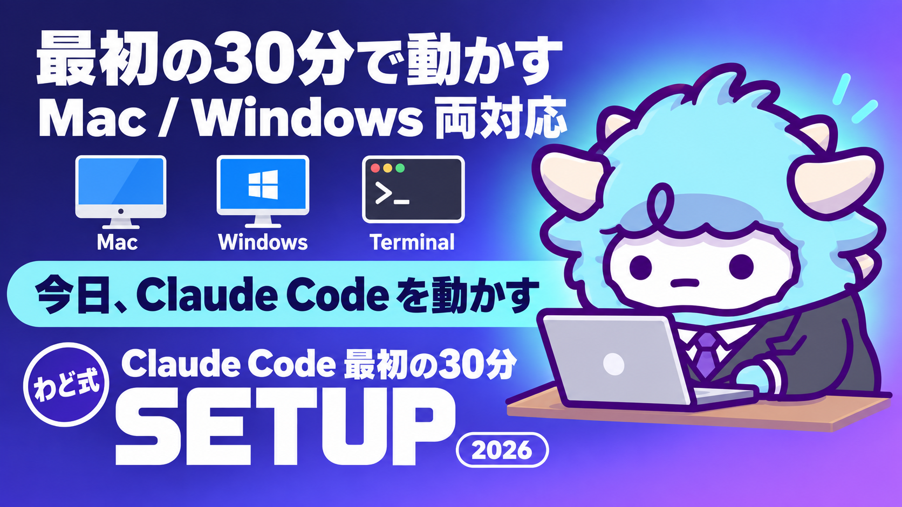

Claude Code 最初の30分
Mac／Windows の導入手順と、最初に投げる7つのプロンプト
このページが特典の本体です。下へスクロールして使ってくださいClaude Code 最初の30分
Claude Codeというツールをパソコンに入れて、あなたの情報を読ませながら「売るための文章」を作れる状態にします。今日やることは、インストールと、最初の7つのプロンプトを打つことだけです。
はじめに
わどです。この特典は、AIで収益を上げるときのいちばん最初のハードル「AIツールを入れるところ」をゼロから通すためのものです。
Claude Codeは、パソコンのフォルダに置いたファイルを直接読み書きできるAIです。チャット画面にコピペするタイプのAIと違い、あなたの資料・過去の投稿・実績メモを丸ごと読んだうえで、文章や資料をファイルとして作ってくれます。この「読ませる場所」を持っているかどうかで、成果物の質がまったく変わります。
このページは、Mac・Windowsの導入手順、入れた直後に投げる7つのプロンプト、成果物の質を決める「ナレッジの器」の作り方の3つで構成されています。ここから、あなたの商品の「売る流れ」の設計図が1つ手元にある状態まで進みます。
この特典の進め方
上から順番に進めてください。飛ばすと、あとの章が前提にしている手順が抜けます。前提は、パソコン(Mac・Windowsどちらでも可)とネット接続、AI(ChatGPT・Gemini・Claudeのいずれか)のアカウントだけです。ターミナル(黒い画面)を触ったことがなくても大丈夫です。コマンドは全てコピペで動く形にしてあります。
最初のゴール(今日やる1つ)
今日のゴールは1つだけです。
Claude Codeを起動して、「このフォルダに何がありますか」と聞き、日本語で答えが返ってくる状態にする。
これができれば、AIがあなたのパソコンのフォルダを読める状態になった証拠です。あとの7つのプロンプトはコピペするだけで進みます。今日は「設計図を完成させる」まで欲張らなくて構いません。
1. 導入手順(Mac)
Macでの所要時間はおよそ15分です。
1-1 ターミナルを開く
画面右上の虫眼鏡アイコン(Spotlight検索)をクリックし、「ターミナル」と入力してEnterキーを押します。黒い(または白い)ウィンドウが開けば成功です。以降のコマンドはこのウィンドウに打ち込みます。
1-2 Node.jsを入れる
Claude Codeを動かすには、土台になる「Node.js」という無料のソフトが必要です。
- 公式サイトから: ブラウザで公式サイトを開き、Mac用インストーラーをダウンロードして実行する(最新版を選ぶ。バージョン番号にはこだわらなくて良い)
- Homebrewが入っている人:
brew install node
入れ終わったら確認します。
node -v
v から始まる数字が表示されれば成功です。表示されない場合はインストーラーを実行し直してください。
1-3 Claude Codeを入れる
npm install -g @anthropic-ai/claude-code
数十秒〜数分で完了します。確認は claude --version。数字が表示されれば成功です。
1-4 最初のフォルダを作る
AIに読ませる作業用フォルダを1つ作ります。「デスクトップ」の中に作るのがおすすめです。
mkdir ~/Desktop/my-launch
cd ~/Desktop/my-launch
このフォルダに、あとで作る 私のナレッジ.md を入れていきます。
1-5 起動してログインする
作ったフォルダの中で、次を打ちます。
claude
初回はブラウザが自動で開き、AIのアカウント(サブスクリプション)でログインを求められます。ログインするとターミナルに戻り、チャットが開始できます。
1-6 動作確認
チャット欄に次のように打ってEnterを押します。
このフォルダに何がありますか
日本語で答えが返ってくれば成功です。これで今日のゴールは達成です。
2. 導入手順(Windows)
Windowsでの所要時間はおよそ15〜20分です。文字化けが起きやすい点だけMacと違います。
2-0 zipファイルの文字化けに注意
この特典に付属するzipファイルをWindows標準の機能で解凍すると、ファイル名が記号の羅列(文字化け)になることがあります。中身の文章は壊れていません。壊れているのはファイル名の表示だけです。
- 「7-Zip」または「Explzh」という無料の解凍ソフトで解凍し直す
- または文字化けしたまま進め、あとの手順でAIに「このフォルダの中身を全部読んで、それぞれ何のファイルか一覧にして」と頼む(中身を読んで日本語で教えてくれます)
2-1 PowerShellを開く
スタートメニューを開き、「PowerShell」と入力してEnterキーを押します。青いウィンドウが開けば成功です。以降のコマンドはこのウィンドウに打ち込みます。
2-2 Node.jsを入れる
- 公式サイトから: ブラウザで公式サイトを開き、Windows用インストーラー(.msi)をダウンロードして実行する(最新版を選ぶ)
- wingetが使える人:
winget install OpenJS.NodeJS.LTS
インストール後、PowerShellを開き直してから確認します。
node -v
v から始まる数字が表示されれば成功です。
2-3 Claude Codeを入れる
npm install -g @anthropic-ai/claude-code
確認は claude --version。うまく入らない場合は、PowerShellを「管理者として実行」で開き直して同じコマンドを試してください。
2-4 最初のフォルダを作る
mkdir $HOME\Desktop\my-launch
cd $HOME\Desktop\my-launch
2-5 起動してログインする
claude
初回はブラウザが自動で開き、ログインを求められます。ログイン後、PowerShellの画面に戻ればチャットが開始できます。
2-6 動作確認
Macと同じく、チャット欄に次を打ちます。
このフォルダに何がありますか
日本語で答えが返ってくれば成功です。
3. 最初に投げる7つのプロンプト
ここからが本番です。7つのプロンプトを「同じ会話の中で、順番に」貼っていきます。前のプロンプトで出てきた成果物が次の材料になる作りです。別々の会話で使うと精度が落ちます。
全体は3つのSTEPです。STEP0=接続確認、STEP1=商品と特典を設計する、STEP2=売る文章を4種類作る(STEP2-1〜2-4)、STEP3=日程を固定する。
STEP0 接続確認プロンプト
導入手順の最後で使ったものと同じです。作業を再開するときは、まずこれから始めてください。
このフォルダに何がありますか。
私のナレッジ.md があれば、その内容を読んでから待機してください。
STEP1 商品設計・特典プロンプト
【 】の中を自分の言葉で埋めてから貼ってください。埋められない欄は「未定」でも構いません。AIが質問しながら一緒に決めてくれます。
あなたは私専属のローンチ設計者です。
私の商品を「売る流れ」に載せるための設計図を、一緒に作ってください。
## 私の情報
- 商品(または商品のタネ):【例: AI画像作成を教える講座】
- 想定するお客さん:【例: SNS発信をしている個人事業主】
- お客さんが困っていること:【 】
- 価格のイメージ:【例: 未定】
- 販売形式:【例: 動画講座/ライブ講座/個別サポート/未定】
- 販売したい時期:【例: 未定】
- 私の実績・経験(実在するものだけ):【 】
## やってほしいこと
1. 足りない情報があれば、先に質問してください(最大5問・1問ずつ)。
2. そのあと、次の6項目を「ローンチ設計図」として1枚にまとめてください。
- 1. 商品設計: 誰に・何を・いくらで・どんな形式で
- 2. 特典: 申込の後押しになる特典を3案(私が今の手持ちで作れるものだけ)
- 3. LP: 載せるべき要素の一覧
- 4. 告知: どの媒体で・何回・何を言うか
- 5. 配信: 販売開始から締切までの配信スケジュール
- 6. 販売: 申込方法と締切の設計(締切理由も)
3. 最後に「この設計図の弱点」を3つ、正直に指摘してください。
## ルール
- 私が書いていない実績・数字を作らないでください。
- 専門用語を使うときは、1行で意味を添えてください。
- 派手な誇張より、私が今週から実行できる現実的な設計にしてください。
出てきたら、ファイルに保存してください(設計図.md など)。以降のプロンプトはこの設計図が前提になります。
STEP2-1 LP骨子プロンプト
上のローンチ設計図をもとに、販売ページ(LP)の骨子を作ってください。
## 出力の形
上から順に、次のセクション構成で。各セクションは「見出し案+入れる内容の箇条書き」まで書いてください(完成文章はまだ不要)。
1. ファーストビュー: 誰向けの何か+一番強い約束(1行)
2. 共感: お客さんが今困っている場面を具体的に
3. 原因: なぜ今のやり方では解決しないか
4. 解決策: 商品の紹介(何が・どう届くか)
5. 中身: カリキュラム・内容の全リスト
6. 実績・声: 私の実績とお客様の声(実在するものだけ。無ければ「準備中」と書く)
7. 特典: 設計図の特典3案から
8. 価格: 価格と、その価格の理由
9. 締切: いつまで・なぜその締切か
10. よくある質問: 5問
11. 最後のひと押し: 迷っている人への一言
## ルール
- 私が伝えていない実績・声・数字を作らない。
- 「誰でも」「絶対」「簡単に稼げる」系の誇張表現を使わない。
- 各セクションに「ここに入れる画像・スクショの案」も1行添える。
STEP2-2 告知(X)プロンプト
上のローンチ設計図をもとに、X(Twitter)の告知投稿を作ってください。
## 作るもの(3種×各2案)
1. ティザー投稿(販売開始の3〜5日前): 商品名は出さず、「困りごと+もうすぐ発表」で期待を作る
2. 募集開始投稿(販売開始日): 何が・誰向けで・いつまでか+申込への一言
3. 締切前投稿(締切24時間前): 残り時間+迷っている人の背中を押す一言
## ルール
- 各投稿は140字以内を基本。長くても200字まで。
- 1投稿1メッセージ。全部盛りにしない。
- 私の口調に合わせる(普段の投稿を3つ貼るので参考にして →【ここに貼る/無ければ「丁寧めで」等と指定】)。
- ハッシュタグは付けない(必要なら私が後で足す)。
- 実績・数字は設計図にあるものだけ。
- 絵文字は各投稿2個まで。
## 出力の形
「1-a/1-b/2-a/2-b/3-a/3-b」のラベル付きで、コピペできる形に。
最後に、それぞれの投稿に合う画像の案を1行ずつ。
STEP2-3 配信(公式LINE)プロンプト
上のローンチ設計図をもとに、公式LINEの配信文を3通作ってください。
## 作るもの
1. 予告配信(販売開始の前日): 明日何が始まるか+読む理由を1つ
2. 開始配信(販売開始日): 商品の案内+申込リンクへの導線+締切の明示
3. 締切配信(締切当日): 今日で終わること+最後の一押し+締切時刻
## LINEのルール
- 1通は「スマホ2画面以内」。長文にしない。
- 冒頭1行目で用件が分かるように(そこで開封が決まる)。
- 1通につきリンクは1つだけ。【申込リンク】と書いておいて(私が差し込む)。
- 絵文字は各通3個まで。改行を多めに、ブロックごとに空行。
- 実績・数字は設計図にあるものだけ。「絶対」「誰でも稼げる」系の表現は使わない。
## 出力の形
1通ずつ、そのままコピペで配信できる完成形で。
各通の下に「配信するおすすめ時刻と理由」を1行。
STEP2-4 メルマガプロンプト
上のローンチ設計図をもとに、メルマガを3通作ってください。
## 作るもの
1. 予告メール(販売開始の前日)
2. 開始メール(販売開始日)
3. 締切メール(締切当日)
## メールのルール
- 件名は各通5案。開封したくなるが、釣りにならないもの。
- 本文は800字以内。1通1メッセージ。
- 書き出しの2行で「自分ごと」にさせる(読者の困りごとの場面から入る)。
- 申込導線は【申込リンク】と書く(1通に1回、多くても2回)。
- 実績・数字は設計図にあるものだけ。誇張表現を使わない。
- 追伸(P.S.)を1つ付ける。本文と違う角度の一言。
## 出力の形
「件名5案 → 本文 → おすすめ配信時刻」の順で、1通ずつ。
STEP3 逆算カレンダープロンプト
上のローンチ設計図をもとに、実行カレンダーを作ってください。
## 前提
- 販売の締切日:【例: 未定なら「2週間後」と書く】
- 私が1日に使える作業時間:【例: 平日1時間】
## やってほしいこと
締切日から逆算して、次を1つの表にまとめてください。
列: 日付/曜日/やること/使うプロンプト(STEP番号)/所要時間の目安
含める工程:
- LP骨子づくり → LP完成
- ティザー投稿(開始3〜5日前)
- 販売開始(X・LINE・メルマガ同日)
- 中間の追い配信(開始と締切の中間に1回)
- 締切24時間前の投稿・配信
- 締切当日の最終配信
- 締切翌日: 結果の記録(申込数・反応をナレッジの器に書く)
## ルール
- 1日の作業が、私の使える時間を超えないように配分する。
- 無理な日程なら、正直に「締切を延ばすべき」と言ってください。
4. 「ナレッジの器」の作り方
7つのプロンプトは、誰が使っても「それなり」の物が出ます。そこから先の差は、AIに渡すあなたの一次情報の量で決まります。
下のテンプレートをコピーして 私のナレッジ.md という名前で保存し、作業フォルダに入れてください。3割埋まれば使い始めて大丈夫です。迷ったら、商品 → お客さん → 文体 → 実績の順で埋めてください。
# 私のナレッジ
## 商品
- 商品名:
- 一言でいうと(誰の・何を・どう解決する):
- 価格と形式:
- 含まれるもの/含まれないもの:
## お客さん
- どんな人か(職業・状況):
- 来る前に困っていること(お客さんの言葉のまま):
- 買ったあと、どうなってほしいか:
## 実績(実在するものだけ。日付つきで)
- 例: 講座受講者◯名/お客様の声「……」(◯◯さん)
-
## お客様の声(原文のまま。もらった日付と誰からかも)
-
## 私の文体・口調
- 一人称:
- よく使う言い回し:
- 使わない言葉・NG表現:
- 参考: 自分らしい投稿・文章を3つ、ここに貼る
## 過去にうまくいったこと/失敗したこと
- うまくいった: (何を・なぜうまくいったと思うか)
- 失敗した: (何を・なぜ)
## 数字の記録(ローンチのたびに追記)
| 日付 | 施策 | 数字 | メモ |
|---|---|---|---|
| 例 | 1回目のローンチ | 申込◯件 | 締切前日が一番動いた |
育て方は3つだけです。
- 最初は3割埋まっていれば十分。使いながら足す。
- ローンチが1本終わるたびに「数字の記録」へ1行。次回の最強の武器になります。
- AIの成果物に「なんか違う」と思ったら、直しをここに書き足す。次からは直った状態で出てきます。
実績・数字・お客様の声は、必ず実在するものだけを書いてください。ここに嘘が入ると、以降の成果物すべてに嘘が乗ります。
5. 30分で終わらせる時間配分
急いでいる人向けの目安です。この順番だけ守れば30分前後で今日のゴールに届きます。
| 時間 | やること |
|---|---|
| 0〜5分 | ターミナルを開く/Node.jsのインストールを開始する |
| 5〜15分 | Node.jsの完了を確認/Claude Codeを入れる |
| 15〜20分 | 作業フォルダを作る/claude を起動してログインする |
| 20〜25分 | STEP0の接続確認プロンプトを打つ(今日のゴール達成) |
| 25〜30分 | 私のナレッジ.md を作業フォルダに置き、3割だけ埋める |
30分を超えても構いません。焦って雑に進めるより、STEP0の接続確認まで確実に着地させることを優先してください。設計図づくり(STEP1)は残り時間か、別の日でも大丈夫です。
7つのプロンプトを使うときのコツ
- 必ず「同じ会話の中で、順番に」貼ってください。会話を新しく始めると前の成果物を覚えていません。
- 出てきた成果物は、その都度ファイルに保存してください。見返すときも再生成させるときも早く進みます。
- 全部を一気に完成させなくて大丈夫です。STEP1だけ今日終わらせ、STEP2以降は同じ会話(またはファイルを貼り直す形)で再開できます。
- 違和感があれば「もっと私らしい言い方にして」のように遠慮せず直しを頼んでください。1回で完成形が出ることは稀です。
よくある失敗 7つと直し方
| # | 失敗 | 直し方 |
|---|---|---|
| 1 | node -v で何も表示されない |
インストーラーを再実行し、ターミナルを開き直して再確認する |
| 2 | npm install でエラーが出る |
ネット接続を確認。Windowsは「管理者として実行」で開き直す |
| 3 | claude と打っても何も起きない |
claude --version で完了を確認。未完了なら手順をやり直す |
| 4 | ログイン画面がブラウザで開かない | 表示されたURLを手動でコピーしてブラウザに貼る |
| 5 | フォルダの中身をAIが読んでくれない | 作業フォルダの中で claude を起動しているか確認する |
| 6 | Windowsでファイル名が文字化けする | 2-0章の対処(解凍ソフトを使う、または化けたまま進める)を行う |
| 7 | 出てきた文章が一般論すぎる | 私のナレッジ.md の情報量不足。商品とお客さんの欄を厚くして打ち直す |
安全に使うための注意
- 実績・数字・お客様の声は、実在するものだけを書いてください。AIに作らせないこと。
- 出てきた文章は必ず自分の目で確認してから公開・配信してください。AIの出力をそのまま送らない。
- 「誰でも」「絶対」「これで確実に稼げる」といった言い切り表現は、自分で削ってください。
- 作業フォルダにパスワードやログイン情報を置かないでください。AIが読める場所には公開されても困らない情報だけを置くのが原則です。
- 複数の端末で同時に開いて編集すると内容が競合します。片方を閉じてから作業してください。
- 他人の文章・画像をそのまま流用しない。参考にする場合は自分の言葉で書き直してください。
つまずいたときに聞くプロンプト
そのままコピペしてAIに聞いてください。
今出ているエラーメッセージの意味を、専門用語を使わずに日本語で説明してください。
そのうえで、次に私が実行すべきコマンドを1つだけ教えてください。
ここまでの手順のうち、どこまで完了していて、どこからやり直せば良いか整理してください。
用語集
| 用語 | 意味 |
|---|---|
| Claude Code | パソコンのフォルダを直接読み書きできるAI。ターミナルから使う |
| ターミナル/PowerShell | コマンドを打ってパソコンを操作する画面 |
| Node.js | Claude Codeを動かすために必要な土台のソフト |
| npm | Node.jsに付属する、ソフトを入れるための道具 |
| 作業フォルダ | AIに読ませるファイルをまとめて置く場所 |
| ローンチ | 商品を企画から販売・締切まで一連の流れに載せて売ること |
| ナレッジの器 | 自分の商品・お客さん・実績などをまとめておく情報の置き場所 |
出す前の品質チェック(10項目)
- 実績・数字・お客様の声は、すべて実在するものか
- 「誰でも」「絶対」「これで確実に稼げる」といった言い切り表現が残っていないか
- 価格や締切の情報が最新か(前のローンチのまま残っていないか)
- 申込リンクが正しいURLに差し替わっているか
- 誤字脱字・文字化けがないか
- LINE・メール・Xそれぞれの文字数制限を守っているか
- 自分の口調・言葉遣いに合っているか(AIっぽい言い回しが残っていないか)
- 個人情報や機微な情報が混ざっていないか
- 画像・スクショの案が実際に用意できるものか
- 一度、時間を置いてから読み返したか(勢いだけで送っていないか)
最新AI（2026年9月時点）でこの特典はどう変わるか
この特典では: 2026年9月時点の Claude Code は Opus が既定です。この特典の30分は、最上位モデルを使わなくても同じ手順で通ります。
2026年9月の第1週に、主要な AI が続けて更新されました。この特典の手順は変わりませんが、次の3点を知っておくと手数が減ります（2026年9月6日時点の公開情報です。提供状況は変わるので、使う前に各社の公式サイトで確かめてください）。
- GPT-6 Astra（OpenAI・2026年9月3日発表）: 画面の情報を読み取り、アプリを人間と同じ画面経由で動かす「コンピュータ操作」が主機能になりました。フォーム入力・表計算・資料づくりのような「手順が決まっている作業」を任せやすくなります。ただし段階的な提供の途中で、自分のアカウントにまだ出ていないことがあります。画面に映った文章をそのまま指示として読むことがあるので、AI に画面を触らせるときは「映すものを選ぶ」を守ってください。
- Claude Fable 5.1（Anthropic・2026年9月1日発表）: 数時間から数日にわたる、複数アプリをまたぐ作業を最小限の監督で回すための最上位モデルです。この特典の作業は Sonnet／Opus で足ります。「何日もかかる仕事を丸ごと任せる」段階になってから検討してください。Claude Code の導入は特典「Claude Code 最初の30分」で扱っています。
- AI社員: 上の2つが向いている先は同じです。「毎回同じ指示を書かなくていい担当」を1人ずつ増やす形が、個人でも現実になりました。この特典のプロンプトやシステム指示は、そのまま AI社員の「指示書」の1枚になります。つくり方は特典「AI社員1人目のつくり方」で扱っています。
モデルの差で成果は決まりません。何に使うかで決まります。この特典の手順を1周してから、新しいモデルを試してください。
最終チェックリスト
- [ ] Node.jsのインストールを完了した
- [ ] Claude Codeのインストールを完了した
- [ ] 作業フォルダを作り、
claudeの起動とログインを完了した - [ ] STEP0の接続確認で、日本語の返答を確認した
- [ ]
私のナレッジ.mdを作業フォルダに置き、3割以上埋めた - [ ] STEP1(ローンチ設計図)を実行し、ファイルに保存した
- [ ] STEP2(LP骨子・告知・配信2種)のうち、少なくとも1つを実行した
- [ ] STEP3(逆算カレンダー)を実行し、スマホのカレンダーに転記した
- [ ] 出す前の品質チェック(10項目)を通した
- [ ] 締切翌日に「数字の記録」を書く予定を、自分のカレンダーに入れた